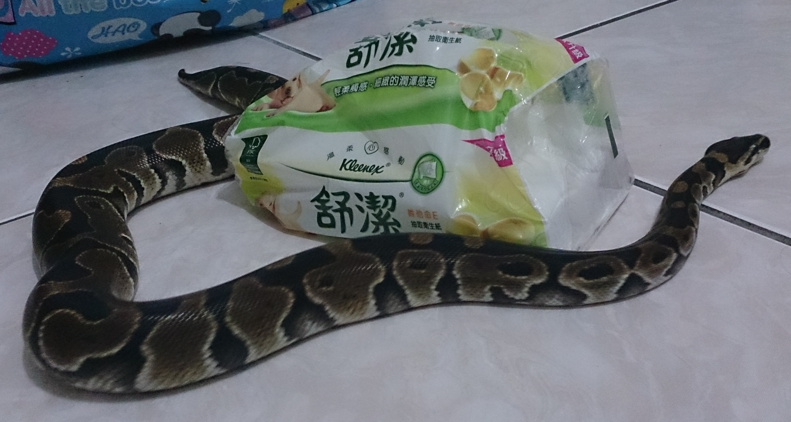
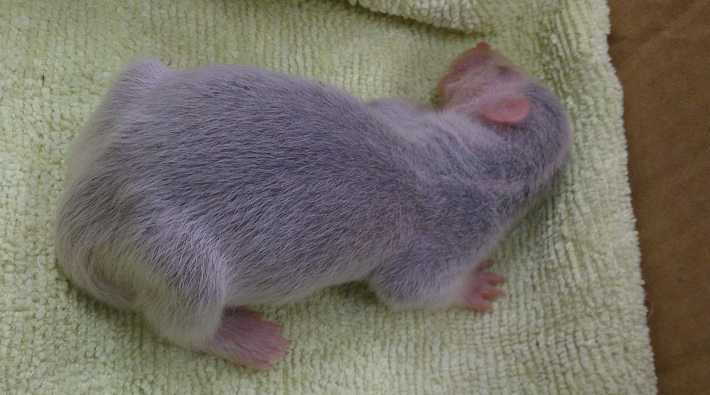
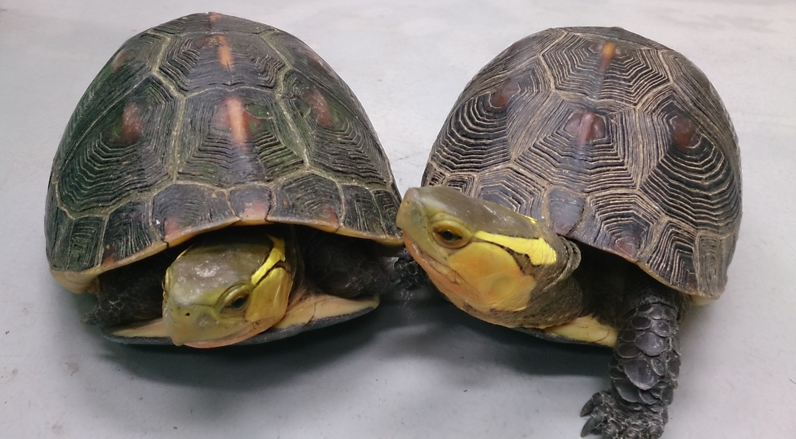
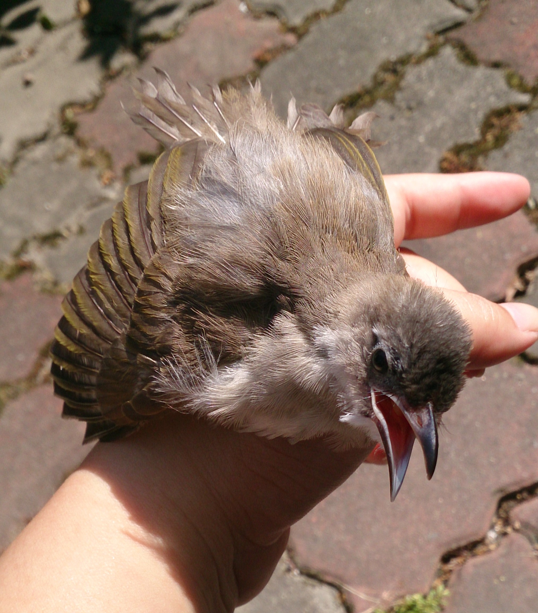

兩百字內的個人簡介
我是黃明惠，畢業於宜蘭大學森林暨自然資源學系。
畢業後順利於專題指導老闆實驗室開始工作，
從民國100年工作至今。
工作內容不外乎是處理和研究相關的數據分析、日常的行政及管理實驗室相關業務。
我的個性比較內向，喜歡做重複的事情，更是喜歡沉浸在實驗或是分析數據；
想轉職原因是看到我先生是軟體工程師，
他的工作環境是讓我覺得更嚮往，只需要專注做好自己的部分。
為了成為軟體工程師，做過什麼努力？若有具體作品請分享給我們
我目前只有先看完彭彭在YouTube的教學影片，並跟著影片一起寫code。
如果參與這個訓練，會怎麼安排學習時間？
原本的工作若非在年底或是計畫截止前，平常的上班時間有許多個人的時間可以用來學習，
每周一的線上開會時間，我也可以利用特休處理，若進入到第二階段，必須要全心投入，我會請育嬰假度過這段時間。
是否有想要加入的公司？為什麼想加入該公司？
我想加入趨勢科技。我本來以為我的工作福利其實很好了，
不過看到我先生之前在趨勢科技工作時，公司給的資源以及上班的彈性之後，
發現趨勢科技的上班制度更符合我目前現階段的生活方式。
請描述一件產生明顯負面情緒的經歷，如何處理該情緒？
曾經請過親戚幫忙辦理保險及信用卡，因此那位親戚有我的相關個資，後來在當年的年底，
忽然信用卡公司寄來了2張我沒有申請過新的信用卡給我，在我以為我的個資外洩、
打電話到信用卡公司客服確認是否有真的申辦之後，才收到那位親戚姍姍來遲的Line通知，
因為她的底下業務員業績不足，所以為了衝業績就幫我申請了信用卡。
我的情緒從一開始收到信用卡的一頭霧水，到跟客服確認資訊弄得火冒三丈，
最後收到親戚的通知後達到七竅生煙；最後這過程我也只有請親戚把我留在她那邊的資料銷毀，
並嚴正的表達若有下一次，就走法律程序；之後再碰面時，親戚也有誠懇地跟我道歉，這件事情就到此截止。
關於這份申請網頁，分享一個開發時的技術心得
萬事起頭難，本來以為自己有跟著影片寫code，應該不會寫不出來，
不過自己真的從無到有開始打程式碼的時候，還是腦袋空白了一陣子，把之前做的作業翻出來一個一個看，才慢慢找回感覺。
不過做最久的，就是在排版了，像是要把照片的四邊切成圓角，試了好多的方法，一下在父容器設定，一下在容器裡面設定，
中間來來回回弄了好幾個小時，最後終於把版面排到自己覺得可以的樣子。
請用簡短兩三句話，描述對你而言，最重要的一項人際交往原則
以誠相待，彼此不要誰吃虧誰占便宜
其他想要對我們說的事情？
無論會不會上，還是要感謝彭彭願意花時間錄製了很多的免費課程，
讓完全新手的我，不會看到程式碼就害怕，而且還跟先生多了一個共同話題呢！